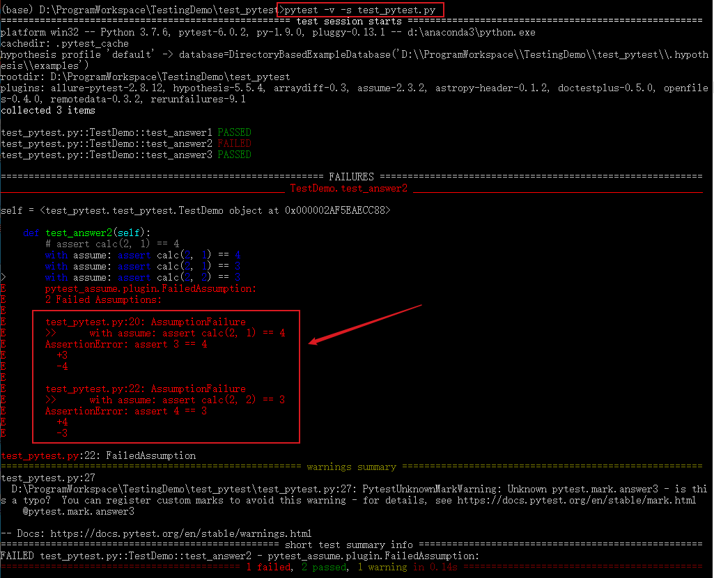

Pytest是基于Python的开源测试框架，语法简单易用，有大量的插件，功能非常多。自动检测测试用例，支持参数化，跳过特定用例，失败重试等功能。
安装
使用pip命令安装：
1 | pip install -U pytest # 安装 |
1 | $ pytest --version |
用例识别
- pytest识别文件名为test_*.py或者*_test.py的测试文件
- 测试文件中可以在Test*类中写测试用例（测试用例以test_*开头，并且测试类不能有__init__方法）
- 不在Test*类中的test_*用例也可以被识别到。
打印测试目录下匹配到的所有用例：pytest --collect-only1
2
3
4
5
6
7
8
9
10
11
12
13
14
15
16
17
18
19
20
21
22
23
24
25
26
27
28
29
30
31
32
33
34
35(base) D:\ProgramWorkspace\TestingDemo>pytest --collect-only
============================================== test session starts ==============================================
platform win32 -- Python 3.7.6, pytest-5.3.5, py-1.8.1, pluggy-0.13.1
rootdir: D:\ProgramWorkspace\TestingDemo
plugins: hypothesis-5.5.4, arraydiff-0.3, astropy-header-0.1.2, doctestplus-0.5.0, openfiles-0.4.0, remotedata-0.3
.2
collected 20 items
<Module test_pytest.py>
<Function test_one>
<Function test_two>
<Function test_three>
<Module test_pytest2.py>
<Class Test_Demo>
<Function test_one>
<Function test_two>
<Function test_three>
<Package D:\ProgramWorkspace\TestingDemo\testing>
<Module test_calc.py>
<UnitTestCase TestCalc>
<TestCaseFunction test_add_1>
<TestCaseFunction test_add_2>
<Module test_calc2.py>
<Class TestCalc>
<Function test_add[1-2-3]>
<Function test_add[-1--2--3]>
<Function test_add[0-1-1]>
<Function test_add[0--1--1]>
<Function test_add[0.1-0.2-0.3]>
<Function test_add[999999-1000000-1999999]>
<Function test_div[1-2-0.5]>
<Function test_div[-1--2-0.5]>
<Function test_div[0-1-0]>
<Function test_div[1-0-0]>
<Function test_div[0.1-0.2-0.5]>
<Function test_add_1>
常用选项
-V, --version：查看版本信息-h, --help：查看帮助信息-k EXPRESSION：运行EXPRESSION匹配到的用例，例如pytest -k "add"运行文件名包含add的用例。-m MARKEXPR：执行标记的用例-x, --exitfirst：报错就停止--maxfail=num：错误数达到num时停止--lf, --last-failed：仅运行上次执行失败的用例，上一次执行失败的用例记录在.pytest_cache/v/cache/lastfailed文件中--ff, --failed-first：运行所以用例，但是先运行上一次执行失败的用例-s：命令行显示输出日志，加上它之后可以显示代码中print打印内容-v, --verbose：打印详细日志信息-q, --quiet：打印简略日志信息--collect-only, --co：仅收集测试用例，不执行
Pytest用例执行
用例执行
一个简单的测试用例test_pytest.py：
1 | import pytest |
可以使用如下方式执行某个测试用例
1 | # 执行test_pytest.py所有用例（模块） |
打印日志信息
1 | # 打印详细运行日志信息 |
跳过某个用例
1 | # 跳过运行某个用例 |
运行文件名包含某个关键字的用例
识别包含“add”的用例：pytest -k "add" --collect-only
1 | (base) D:\ProgramWorkspace\TestingDemo>pytest -k "add" --collect-only |
运行某个标记的用例
1 | # 将运行有这个标记的测试用例：@pytest.mark.[标记名] |

报错停止
1 | # 一旦运行到报错用例就停止运行 |

失败重新运行
安装 pytest-rerunfailures 插件：
1 | pip install pytest-rerunfailures |
测试失败后重新运行n次，在重新运行间延迟n秒再运行：
1 | # 重新运行3次 |
重复执行
安装pytest-repeat插件1
pip install pytest-repeat
重复执行：
1 | # 重新执行3次 |
或者在代码中标记：1
2
3
4
5
6
7
8
9
10import pytest
def calc(a,b):
return a + b
class TestDemo():
def test_answer1(self):
assert calc(1, 1) == 2
多条断言
一个方法中有多条断言，通常第一条失败后下面就不执行了，pytest-assume插件可以解决断言失败后继续执行断言的问题。
安装
1 | pip install pytest-assume |
执行多条断言:
1 | # 写法1 |
修改测试用例test_pytest.py：
1 | import pytest |
测试结果：

pytest.main()
除了在终端执行外，也可以通过pytest.main()来执行，pytest.main() 自动查找当前目录下以test_开头的文件或者以_test结尾的py文件。
括号内可传入执行参数，通过[]进行分割，[]内的多个参数通过逗号分割，所有的参数和pytest命令行方式一样：1
pytest.main(['-v', 'test_pytest.py']) # 执行test_pytest.py用例
或者直接在测试文件最后写如下代码，执行py文件。1
2
3if __name__=='__main__':
pytest.main()
# pytest.main(['-v', 'test_pytest.py'])
更多pytest执行方法可参考官方文档：https://docs.pytest.org/en/latest/contents.html#toc
本文标题:Pytest测试框架（一）：pytest安装及用例执行
文章作者:hiyo
文章链接:https://hiyongz.github.io/posts/pytest-install-and-running/
许可协议:本博客文章除特别声明外，均采用CC BY-NC-ND 4.0 许可协议。转载请保留原文链接及作者。